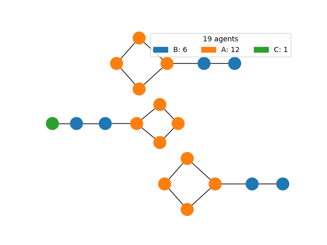
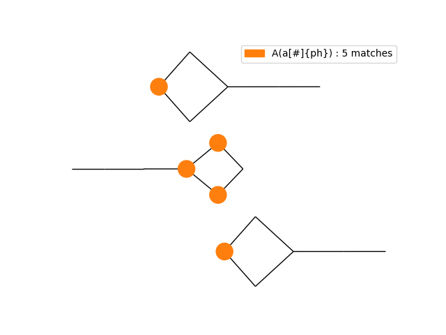

Module KaSaAn.scripts.kappa_snapshot_visualizer_network
Visualize a kappa snapshot using a plain graph.
usage: kappa_snapshot_visualizer_network
[-h] Show detailed help.
-sf SNAPSHOT_FILE_NAME Name of the snapshot file to be viewed.
[-cs FILE_NAME] Optional file containing an agent coloring scheme.
[-p [...]] Agent patterns to highlight.
[-of OUTPUT_FILE] The common file name for saving figures; shown if not given.
[-fs WIDTH HEIGHT] Size of the resulting figure, in inches.
[-ns NODE_SIZE] Size of nodes; default of 300 as used by NetworkX.
[-ew EDGE_WIDTH] Width of edges; default of 1.0 as used by NetworkX.
The following are two views of the same snapshot, one showing all nodes, the other only those that match the specified pattern.
All: 
Pattern: 
Expand source code
#! /usr/bin/env python3
"""
Visualize a kappa snapshot using a plain graph.
``` {.text}
usage: kappa_snapshot_visualizer_network
[-h] Show detailed help.
-sf SNAPSHOT_FILE_NAME Name of the snapshot file to be viewed.
[-cs FILE_NAME] Optional file containing an agent coloring scheme.
[-p [...]] Agent patterns to highlight.
[-of OUTPUT_FILE] The common file name for saving figures; shown if not given.
[-fs WIDTH HEIGHT] Size of the resulting figure, in inches.
[-ns NODE_SIZE] Size of nodes; default of 300 as used by NetworkX.
[-ew EDGE_WIDTH] Width of edges; default of 1.0 as used by NetworkX.
```
The following are two views of the same snapshot, one showing all nodes, the other
only those that match the specified pattern.
All:
.. image:: ../../img/kite_snap_network.png
Pattern:
.. image:: ../../img/kite_snap_network_0.png
"""
import argparse
import matplotlib as mpl
import matplotlib.pyplot as plt
from pathlib import Path
from KaSaAn.functions import render_snapshot_as_plain_graph
def main():
"""Visualize a kappa snapshot using a plain graph."""
parser = argparse.ArgumentParser(description=main.__doc__)
parser.add_argument('-sf', '--snapshot_file_name', type=str, required=True,
help='Name of the snapshot file to be viewed.')
parser.add_argument('-cs', '--coloring_scheme', type=str, default='',
help='Optional file containing a dictionary with color scheme to use for species composition.'
' E.g. <{"Bob": #fff, "Mary": #999, "Sue": #222}>, where the color can be anything'
' converable to a color by MatPlotLib (e.g. RGB[A] tuples, hex-strings, XKCD colors...).'
' If not provided, one will be generated, but bear in mind it is unlikely to match one'
' generated by a different snapshot.')
parser.add_argument('-p', '--highlight_patterns', nargs='*', type=str,
help='A list of kappa patterns. Nodes whose agents contain any of these patters will be colored'
' according to the coloring scheme, all other agents will be transparent; edges will be'
' partially opaque. Will produce an image per pattern. This mechanism allows the layout'
' algorithm to be called only once, and the coloring to be done on nodes of fixed'
' positions, allowing visual comparison for pattern location in overall mixture. If saved,'
' filenames will have "_n" after the filename, where "n" is the order of the pattern used'
' for that highlighting. E.g. "A(site{ph})", these patterns should probably be quoted.')
parser.add_argument('-of', '--output_file', type=str,
help='Optional name of file to save the view to instead of displaying it on screen. Extension'
' dictates the format. Valid choices include PNG, PDF, SVG (anything supported by'
' MatPlotLib).')
parser.add_argument('-fs', '--figure_size', type=float, default=mpl.rcParams['figure.figsize'], nargs=2,
help='Size of the resulting figure, in inches, specified as two elements, width and height'
' (text size is specified in points, so this affects the size of text relative to other'
' graph elements).')
parser.add_argument('-ns', '--node_size', type=int, default=300,
help='Size of nodes; default of 300 as used by NetworkX.')
parser.add_argument('-ew', '--edge_width', type=float, default=1.0,
help='Width of edges; default of 1.0 as used by NetworkX.')
args = parser.parse_args()
# render graph
figure_list = render_snapshot_as_plain_graph(snapshot_file_name=args.snapshot_file_name,
color_scheme_file_name=args.coloring_scheme,
highlight_patterns=args.highlight_patterns,
fig_size=args.figure_size,
node_size=args.node_size,
edge_width=args.edge_width)
# save or display the figure(s)
if args.output_file:
figure_list[0].savefig(fname=args.output_file)
if args.highlight_patterns:
out_path = Path(args.output_file)
out_dir = str(out_path.parents[0])
out_file_stem = out_path.stem
out_file_extension = out_path.suffix
for figure_index, pattern_figure in enumerate(figure_list[1:]):
file_name = out_dir + '/' + out_file_stem + '_' + str(figure_index) + out_file_extension
pattern_figure.savefig(file_name)
else:
plt.show()
if __name__ == '__main__':
main()Functions
def main()-
Visualize a kappa snapshot using a plain graph.
Expand source code
def main(): """Visualize a kappa snapshot using a plain graph.""" parser = argparse.ArgumentParser(description=main.__doc__) parser.add_argument('-sf', '--snapshot_file_name', type=str, required=True, help='Name of the snapshot file to be viewed.') parser.add_argument('-cs', '--coloring_scheme', type=str, default='', help='Optional file containing a dictionary with color scheme to use for species composition.' ' E.g. <{"Bob": #fff, "Mary": #999, "Sue": #222}>, where the color can be anything' ' converable to a color by MatPlotLib (e.g. RGB[A] tuples, hex-strings, XKCD colors...).' ' If not provided, one will be generated, but bear in mind it is unlikely to match one' ' generated by a different snapshot.') parser.add_argument('-p', '--highlight_patterns', nargs='*', type=str, help='A list of kappa patterns. Nodes whose agents contain any of these patters will be colored' ' according to the coloring scheme, all other agents will be transparent; edges will be' ' partially opaque. Will produce an image per pattern. This mechanism allows the layout' ' algorithm to be called only once, and the coloring to be done on nodes of fixed' ' positions, allowing visual comparison for pattern location in overall mixture. If saved,' ' filenames will have "_n" after the filename, where "n" is the order of the pattern used' ' for that highlighting. E.g. "A(site{ph})", these patterns should probably be quoted.') parser.add_argument('-of', '--output_file', type=str, help='Optional name of file to save the view to instead of displaying it on screen. Extension' ' dictates the format. Valid choices include PNG, PDF, SVG (anything supported by' ' MatPlotLib).') parser.add_argument('-fs', '--figure_size', type=float, default=mpl.rcParams['figure.figsize'], nargs=2, help='Size of the resulting figure, in inches, specified as two elements, width and height' ' (text size is specified in points, so this affects the size of text relative to other' ' graph elements).') parser.add_argument('-ns', '--node_size', type=int, default=300, help='Size of nodes; default of 300 as used by NetworkX.') parser.add_argument('-ew', '--edge_width', type=float, default=1.0, help='Width of edges; default of 1.0 as used by NetworkX.') args = parser.parse_args() # render graph figure_list = render_snapshot_as_plain_graph(snapshot_file_name=args.snapshot_file_name, color_scheme_file_name=args.coloring_scheme, highlight_patterns=args.highlight_patterns, fig_size=args.figure_size, node_size=args.node_size, edge_width=args.edge_width) # save or display the figure(s) if args.output_file: figure_list[0].savefig(fname=args.output_file) if args.highlight_patterns: out_path = Path(args.output_file) out_dir = str(out_path.parents[0]) out_file_stem = out_path.stem out_file_extension = out_path.suffix for figure_index, pattern_figure in enumerate(figure_list[1:]): file_name = out_dir + '/' + out_file_stem + '_' + str(figure_index) + out_file_extension pattern_figure.savefig(file_name) else: plt.show()